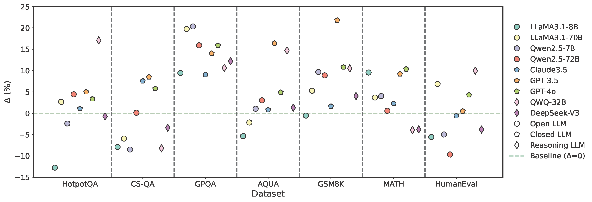

CorrectBench is a systematically designed benchmark that quantifies the extent to which various correction methods improve model outputs in reasoning-intensive scenarios.CorrectBench characterizes self-correction along three principal dimensions: Task Scenario, Self-Correction Type, and LLM Type. The evaluation pipeline begins with selecting a specific task scenario and dataset, followed by applying a chosen correction method, and concludes with assessing the model's iterative self-correction process across diverse LLMs.
 Evaluation and Results
Evaluation and Results
Findings indicate substantial accuracy improvements with self-correction, especially in mathematical and complex reasoning tasks. However, mixing methods may increase computational overhead significantly.
